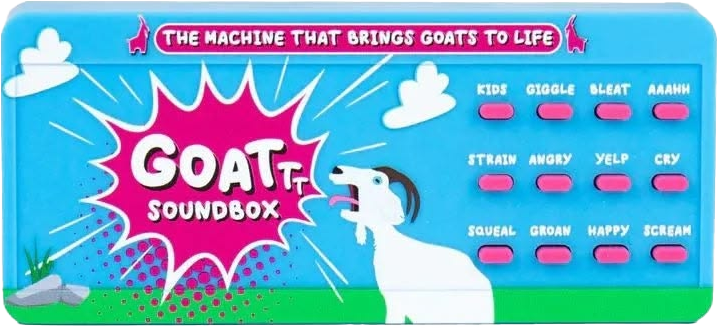

I WANT TO TELL YOU
...
 Hi… what’s your name?
Hi… what’s your name?P1 / THE IDEA
Sheep Translator 是一个声音暗号实验：先输入一句话，再录下自己的羊叫。另一端听见同样的声音序列，就能把它翻译回来。
P2 / DEMO
两个前后相连的真实交互：第一步建立“声音 → 文字”的对应关系，第二步再次识别声音并找回文字。

I WANT TO TELL YOU
...
Hi… what’s your name? Hi… what’s
Hi… what’sP3 / HACKATHON SHOWCASE
为了让大家快速理解 Sheep Translator，我们没有先讲技术，而是把 Demo 写进一段现场小品：一个不敢开口的人，先把想说的话藏进羊叫，再让另一端把它翻译回来。
CHARACTERSNarrator (Jasper)
Rico
Leda
[SCENE 1](Projector shows slides1）
Narrator: Rico is a very shy girl.
Every day, she sees Leda in the library…
And every day, she wants to talk to her.
But she never has the courage.
[SCENE 2]Narrator: One day, an idea came to her mind.
Rico: I can use the sheep sounds to say hi!
(Projector changes to Sheep Translator interface)
Narrator: So Rico opened Sheep Translator.
She typed: “Hi… what’s your name?”
Then she recorded her own sheep sound.
[SCENE 3]Narrator: The next day, Rico finally stopped being shy.
She walked up to Leda…
P4 / TECHNOLOGY
系统识别的不是一整段“语言”，而是多个声音标签。它把连续标签组成序列，再用这个序列查询本地保存的文字。
AUDIO INPUT
浏览器通过 Speech Commands 接收实时音频，并持续生成短时间窗口的声音特征。
CLASSIFICATION
模型为每个羊叫类别输出置信度。系统排除 Background Noise，并只接受高于 0.74 的最佳结果。
SEQUENCE
通过 850ms 接收冷却避免重复采样，再按时间顺序组合标签，例如：
LOOKUP
序列作为 key 写入 localStorage。翻译端按前缀持续匹配，命中完整 key 后返回保存的文字。
MODEL
Teachable Machine Audio Model浏览器端加载 model.json 与 metadata.jsonMATCH RULE
Threshold + Cooldown + Prefix降低背景噪音、重复识别与无效序列的干扰STORAGE
localStorage Dictionary无需后端；数据保留在当前浏览器内